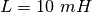
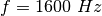
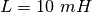
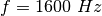
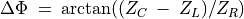
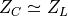
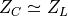

Circuits RLC, réponse en régime stationnaire¶
Objectif
Étudier le comportement de dipôle RLC dans un circuit en courant alternatif. Trois combinaisons différentes peuvent être étudiées.


Procédure
- Faire les connexions une par une, selon les schémas
- Prendre note des mesures d’amplitude et de phase, dans chaque cas
- Recommencer les mesures en changeant la fréquence.
- Pour le circuit série RLC, la jonction entre L et C est surveillées par A3
- Pour la résonance, sélectionner
 ,
 et , ajuster f pour obtenir un déphasage nul
,
 et , ajuster f pour obtenir un déphasage nul - La tension totale aux bornes de L et C s’approche de zéro, les tensions de chacun sont déphasées à la résonance
Discussion
La tension alternative de la source est en A1 et la tension aux bornes de la résistance en A2. Si on soustrait les valeurs instantanées de A2 de A1 on obtient la tension totale aux bornes de L et C. IL faut utiliser un bobinage avec une résistance négligeable pour de bons résultats. Le déphasage entre courant et tension est donnée par .
La tension totale, la tension aux bornes de R et la tension aux bornes
de LC sont montrées dans la figure. Le diagramme de phase montre le
déphasage entre courant et tension. Le bobinage utilisé dans
l’expérience a une inductance d’environ et une résistance de
 .
.
À  ,  et la tension aux bornes
de LC est déterminée par la résistance du bobinage. À la fréquence de
résonance, la tension aux bornes de LC sera minimale, déterminée par la
résistance du bobinage. L’entrée A3 est connectée entre L et C, si bien
que les tensions individuelles de L et C peuvent être présentées.
,  et la tension aux bornes
de LC est déterminée par la résistance du bobinage. À la fréquence de
résonance, la tension aux bornes de LC sera minimale, déterminée par la
résistance du bobinage. L’entrée A3 est connectée entre L et C, si bien
que les tensions individuelles de L et C peuvent être présentées.